“Product Slider For WooCommerce” Documentation by “AccessPress Themes” v1.0.0
“Product Slider For WooCommerce”
Created: 26/09/2018
By: AccessPress Themes
Email: support@accesspressthemes.com
Thank you for purchasing our plugin. If you have any questions that are beyond the scope of this help file, please feel free to email via our user page contact form here. Thanks so much!
Table of Contents
- Installing Instructions
- Product Slider For WooCommerce Listing Page
- Creating New Product Gallery
- General Settings
- Layout Settings
- Product Settings
- Post Settings
- Customization Settings
- Ribbons/Banner Settings
- Social Share Settings
- Lightbox Settings
- Product Slider For WooCommerce Banner/Ribbons Settings
- Shortcode Usage
A) Installing Instructions - top
- Unzip product-slider-for-woocommerce.zip
- Upload all the files to the /wp-content/plugins/product-slider-for-woocommerce
- Activate the plugin through the 'Plugins' menu in WordPress.
- For customizing the plugin's settings, click on Product Slider For WooCommerce menu in Wordpress left admin menu.
- To display the Product Slider For WooCommerce in the frontend, please use automatically generated shortcode from Product Slider For WooCommerce Usage metabox.
B) Product Slider For WooCommerce Listing Page - top
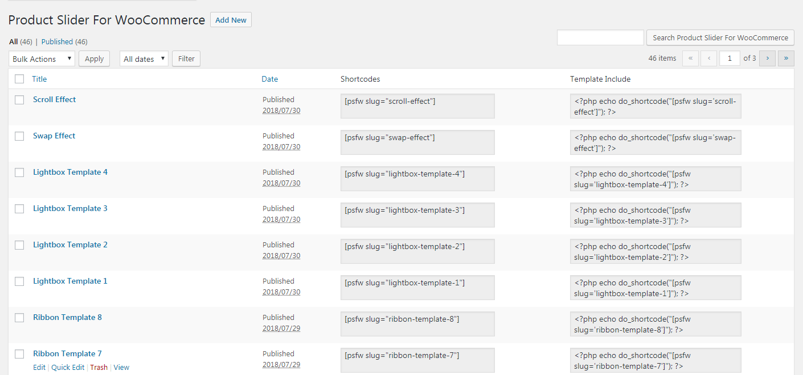
Once the plugin is installed and activated you will find a menu named "Product Slider For WooCommerce" in the left menu bar of the admin menu. On clicking Product Slider For WooCommerce menu, you will go to the plugin's listing page with a 'Add New' button at the top. Clicking on that button will redirect you to the Product Slider For WooCommerce page where you can create your product slider. Basically, there are eight settings to filter the posts and layouts which are individually described below.
C) General Settings- top
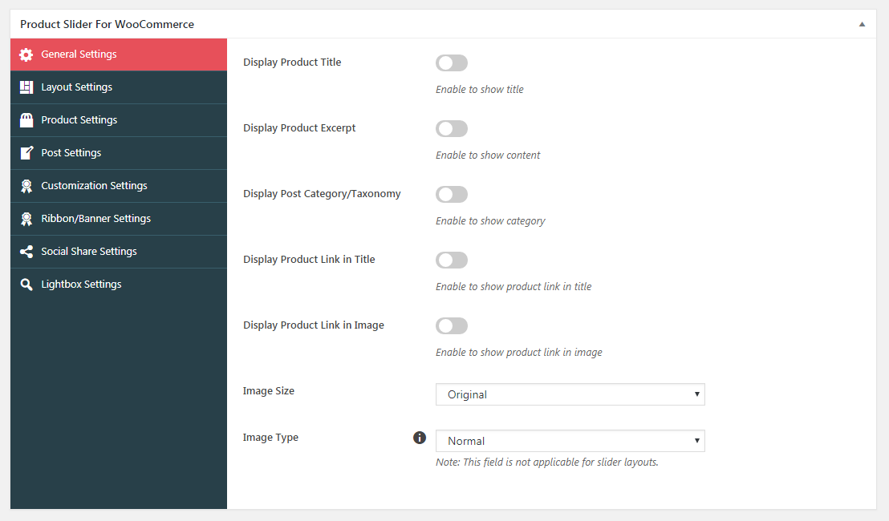The General Settings is for basic settings of product layout which are described below:
- Display Product Title: Enable to display the title of the product in the slider.
- Display Product Excerpt: Enable and enter the length to display the product excerpt in the slider.
- Display Post Category/Taxonomy: Enable to display the category the product belongs to in the slider.
- Display Product Link in Title: Enable to include product link in the title of the product in the slider.
- Display Product Link in Image: Enable to include product link in the image of the product in the slider.
- Image Size: This option allows you to select the image size for the sliders. The image size can be set to either original, large, medium or thumbnail.
- Image Type: This option allows you to select the image hover effect. If you want the default effect for image then select normal option. If you want to display different product image on hover then select swap. However, make sure to upload the swap image inside the products settings. If you want to display image with larger height which needs to be scrolled on hover then select the scroll.
D) Layout Settings- top
The layout settings is for configuring the layout of product's post. The plugin offers slider and carousel layout options which are both described below with it's respectives settings:
Carousel:
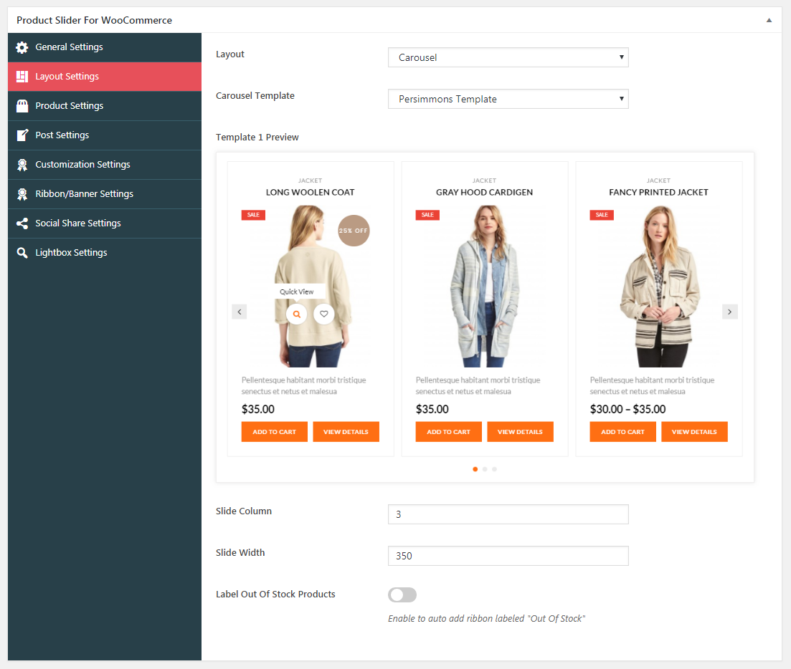This has following field:
- Carousel Template: There are 17 pre designed carousel templates to select from for this layout.
- Slide Column: This option allows you to manage the number of image column in carousel.
- Slide Width: This option allows you to manage the width of each product image size.
- Label Out Of Stock Products: Enable to auto add ribbon labeled "Out Of Stock" for all the out of stock items
- Enable Ribbon Position: Select a position for out of stock ribbon
- Out Of Stock Template: Select a template for out of stock ribbon
Slider:
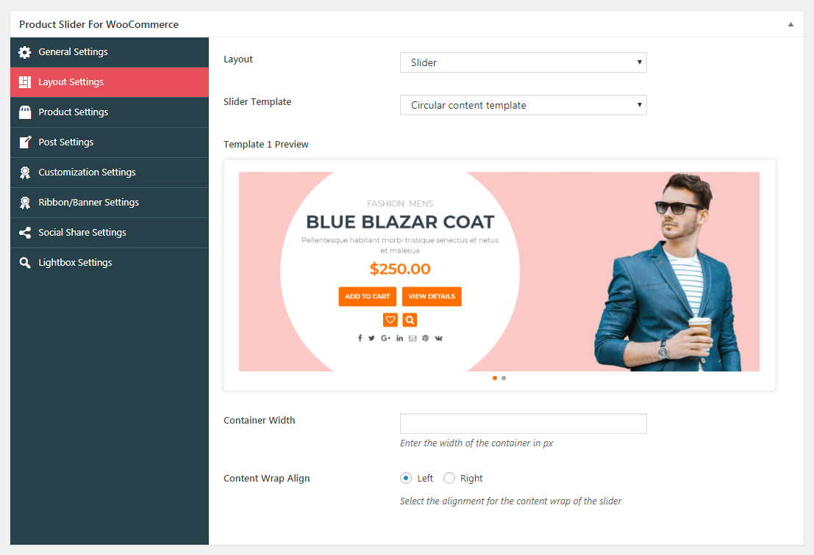 This has following field:- Container Width: This option allows you to assign width to the content wrap of the slider.
- Content Wrap Align: This option allows you to set either the left or right position for the content wrap of your slider. However, this option is available for certain templates only.
E) Product Settings- top
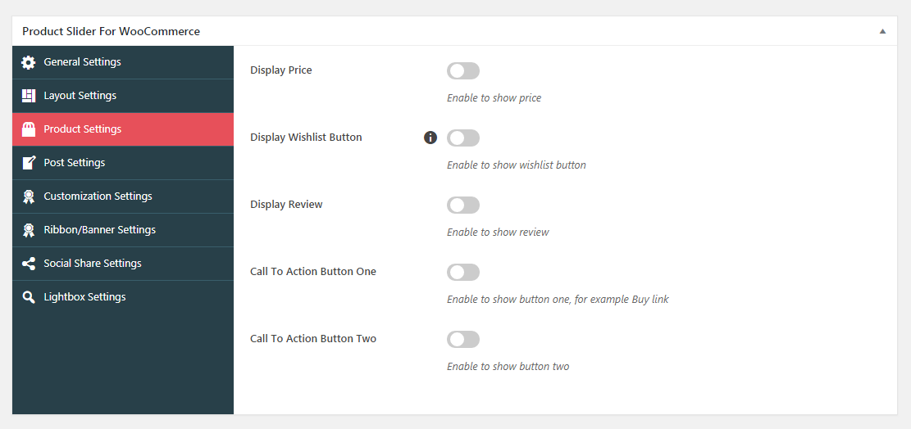The Product Settings is used for basic settings of product.
- Display Price: Enable to display the product price in the slider and select either of the actual or sale price.
- Display Wishlist Button: Enable to display the wishlist button in the slider. However, make sure that you have the plugin "YITH WooCommerce Wishlist" installed.
- Call To Action Button One: Enable or disable to show/hide the button one. There are four types of links that can be assigned to the button; Product Detail Link , Common Custom Link, Individual Custom Link and Add To Cart.
- Call To Action Button Two: Enable or disable to show or hide the button two. There are four types of links that can be assigned to the button; Product Detail Link , Common Custom Link, Individual Custom Link and Add To Cart.
F) Post Settings- top
The Post Settings is used to filter the post through categories, terms, custom field, search keyword and many more. This tab includes the product type, taxonomies/categories, custom field, search keyword, popular post tab which are described below in brief:
Taxonomies/Categories
The Taxonomies tabs are used to filter the product post from taxonomies/categories terms which can be either single term or multiple terms. It include the following fields:- Filter Taxonomies/Categories Post: Enable to show the post associated with certain categories or taxonomies.
-
Taxonomy/Category Type:It is of two type: Single Taxonomy Query and Multiple Taxonomy Query.
Choose Simple Taxonomy/Category Query to display post from a single taxonomy or category with single term.For example display posts tagged with bob, under people custom taxonomy.
Choose Multiple Taxonomy/Category Handling to display posts from several custom taxonomies or categories.
-
Simple Taxonomy/Category Query:
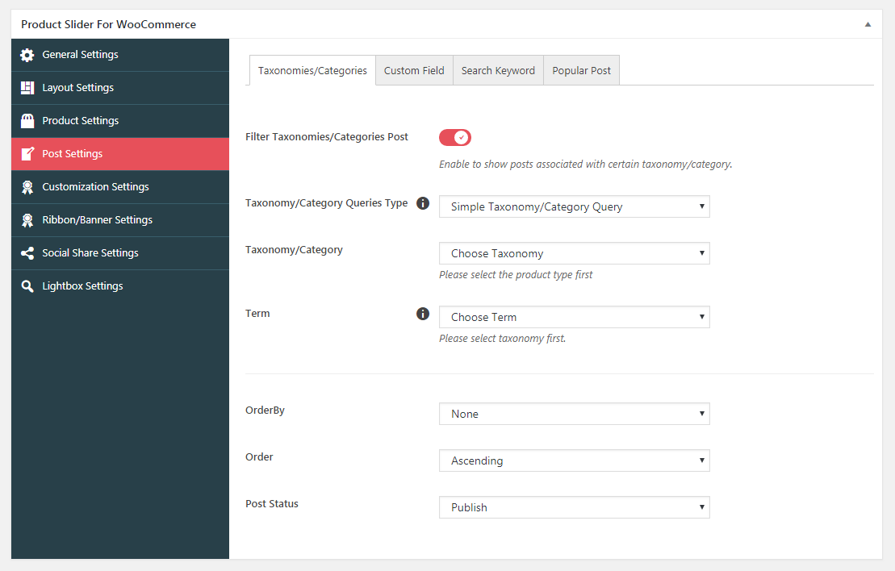
- Taxonomy/Category: In this option you can select the needed category or taxonomy.Please note to select this option please select the post type first.
- Terms: This option is used to select the terms of the above category.
-
Multiple Taxonomy/Category Handling:

- Taxonomy/Category: In this option you can select the needed category or taxonomy.Please note to select this option please select the post type first.
- Terms: This option is used to select the terms of the above category.
- Relation:The logical relationship between each inner taxonomy when there is more than one. Possible values are 'AND', 'OR'.
- Add New Taxonomy condition button:This button is used to add the multiple taxonomy condition.After clicking on this button.New condition block will be added as shown in below screenshots: The Post taxonomy and terms have same functioning as above.And Operator are used to test and filter the post. Possible values are 'IN', 'NOT IN', 'AND', 'EXISTS' and 'NOT EXISTS'
-
Simple Taxonomy/Category Query:
Custom Fields:
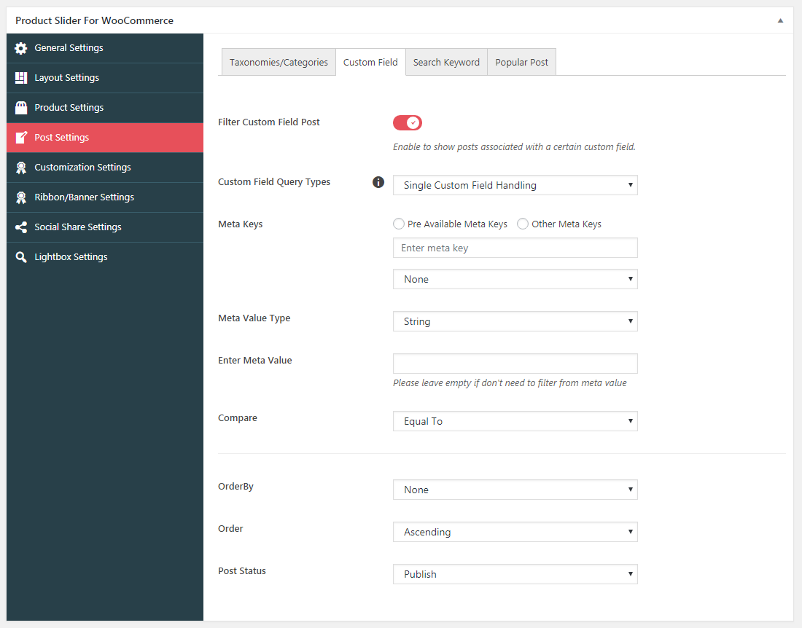If you want to show post associated with certain custom fields then enable this option.After enabling the following field will appear where you can choose the condition for custom field which are described as follow:
-
Custom Field Query Types: This option is of two types:Single Custom Field Handling,Multiple Custom Field Handling.
-
Single Custom Field Handling: Display post where the meta key is 'price' and the meta value that is LESS THAN OR EQUAL TO 22
This option include the following option:
- Meta Keys:Meta keys are Custom field key. Here you can select the already existing meta keys or you can give your own meta keys.To filter from the existing meta keys please select Pre avaliable meta keys and to filter from other meta keys please select other meta keys option.
- Meta Value Type:The meta value type is of two type Number or string.If you want to filter the post from custom meta value through number then use Number and add the required meta value number.If you want to filter through string custom field value then select the string option and then put the string meta value in Enter meta value text.
- Compare:This is used to compare the meta value.This is the Operator to test the 'meta_value'. Possible values are '=', '!=', '>', '>=', '<', '<=', 'LIKE', 'NOT LIKE', 'IN', 'NOT IN', 'BETWEEN', 'NOT BETWEEN', 'NOT EXISTS'.
-
Multiple Custom Field Handling: Display posts that have meta key 'color' NOT LIKE value 'blue' OR meta key 'price' with values BETWEEN 20 and 100.
The Meta keys,Meta Value and Compare fields has same functioning as above which is already described above.
The other fields are described as follow:
- Relation:This is used to show the relationship between each inner meta query when there is more than one. Possible values are 'AND', 'OR'.
- Add New Meta Condition Button:This is used to add the multiple meta condition.By clicking on this button the meta condition fields will be added as shown in below screenshots.
- The Meta keys,Meta Value and Compare fields has same functioning as above which is already described above.
- Type: The type is Custom field type. If you want to filter the post from custom field type then enable this option.Possible values are 'NUMERIC', 'BINARY', 'CHAR', 'DATE', 'DATETIME', 'DECIMAL', 'SIGNED', 'TIME', 'UNSIGNED'.
-
Single Custom Field Handling: Display post where the meta key is 'price' and the meta value that is LESS THAN OR EQUAL TO 22
This option include the following option:
Search Keyword:
Enable the filter keyword search to show posts based on a keyword search.
- Enter keyword: Here enter the keyword to search the post that is related to the keyword for example if the keyword is Hello then it will display posts that match the search term "Hello":
Popular Post:
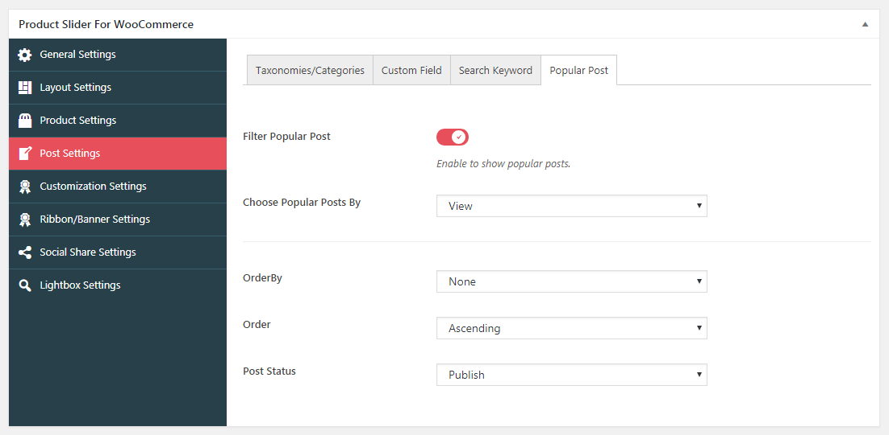This is used to show the popular post.
- Filter Popular Post: If you want to show the popular post then enable this option.
- Choose popular post by: This is used to filter popular post by either view or comment count.
The following are the field that are also avaliable in post settings.
- Order By: This is used to sort retrieved posts by parameter.
- Order:This is used to designates the ascending or descending order of the 'orderby' parameter.
- Post Status: This is used to retrieves posts by Post Status.
G) Customization Settings- top
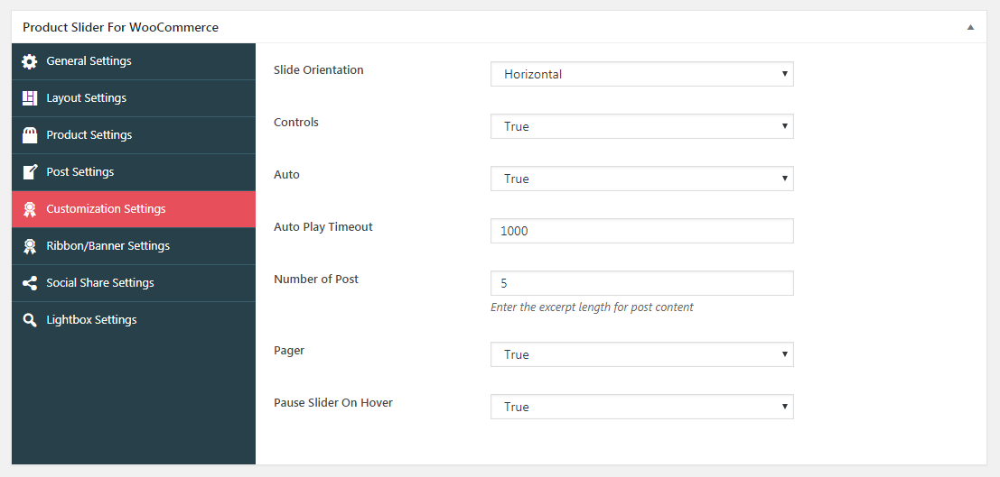The Customization Settings is used for additional settings of product layout which include following fields:
- Slide Orientation: Enable or disable to show or hide the title of the product.
- Controls:This option allows you to show the arrow navigation controls if true is selected.
- Auto: This option allows you to on or off the autoplay of the slides.If you want to show auto then select true.
- Auto Play Timeout:This option allows you to select the speed for auto.
- Number Of Post: Enter the number of items to be displayed in the sliders
- Pager:If you want to show the pager then select true else select false.
- Pause Slider On Hover: Enable this to pause sliders on hover
H) Ribbon Settings- top
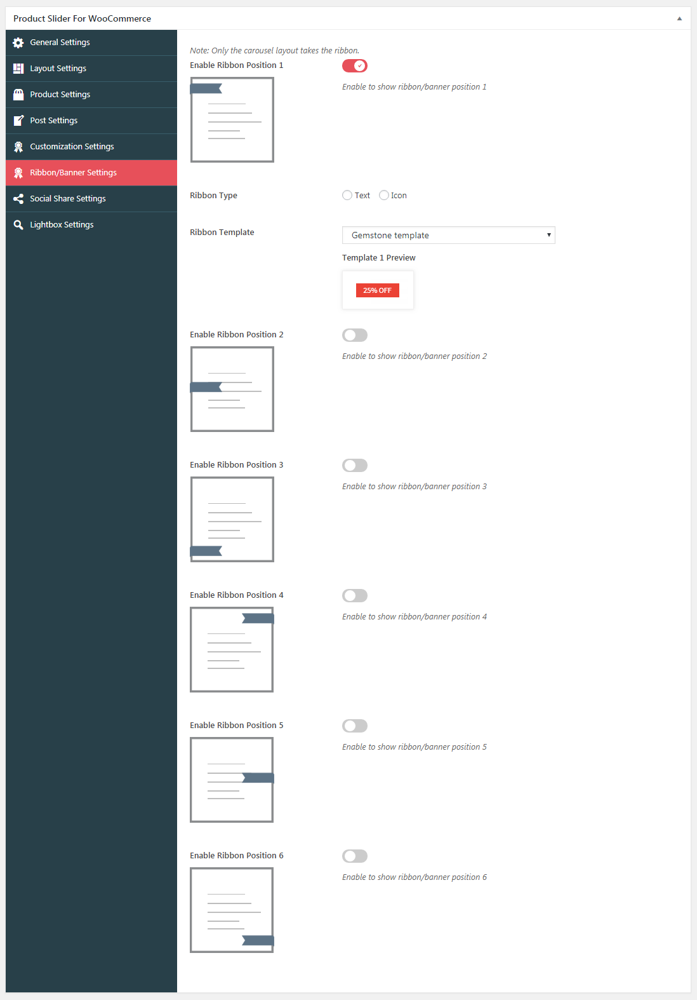The Ribbon/Banner Settings is used to show the product sale or banner content.There are 6 different ribbon position with 8 ribbon templates.It include the following settings.After enabling the ribbon position ribbon type and ribbon template will appear which are described below.
- Ribbon Type: This option allows you to select the ribbon content. The content can be either text or icon.
- Ribbon Template: This is used to select the ribbon template. There are 8 different ribbon template.
I) Social Share Settings- top
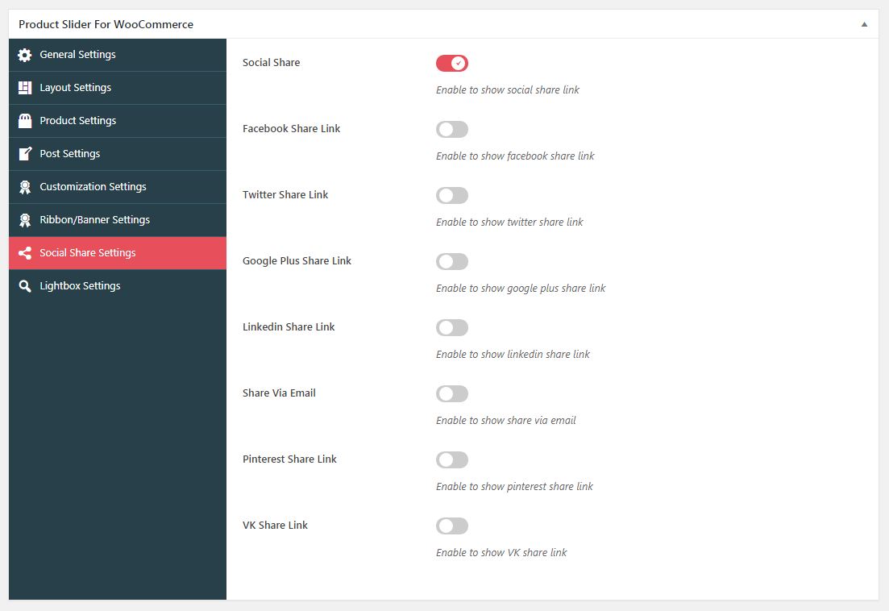This option allows you to display the share link for the post. You can enable the share link for facebook, twitter, google plus, linkedin, email, pinterest and vk share to share the product post respectively.
J) Lightbox Settings- top
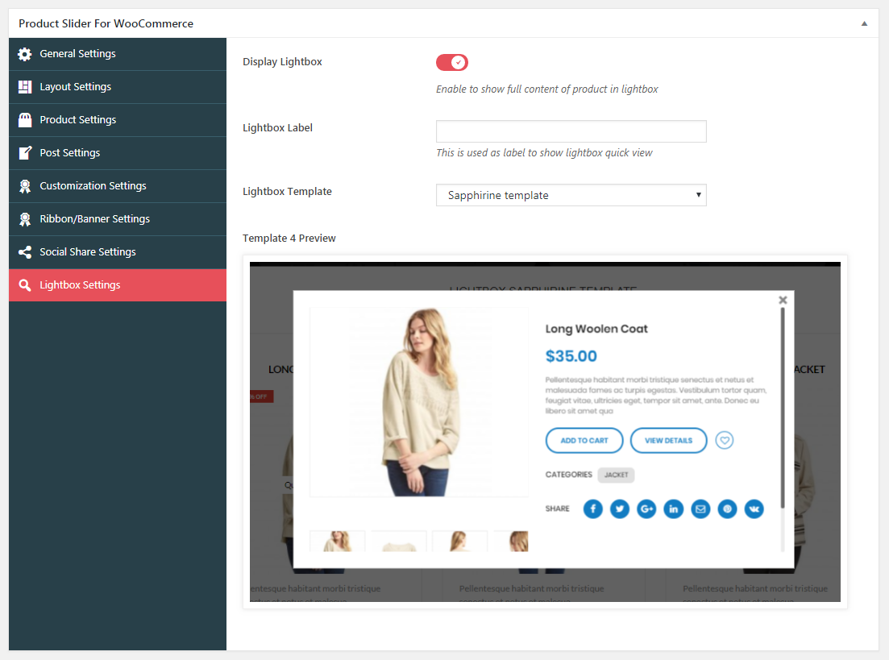The lightbox settings is used to show the product details contents in lightbox. This settings include the following settings:
- Display Lightbox: Enable to show full content of product in lightbox.
- Lightbox Label: This is used to enter the label for lightbox label.
- Lightbox Template: This is used to select the different types of templates for lightbox.
K)Product Slider For WooCommerce Banner/Ribbon Settings- top

The Product Slider For WooCommerce Banner/Ribbon Settings is used to show the product sale or banner content individually.There are 6 different ribbon position with 8 ribbon templates.It include the following settings.
The default option will keep overall ribbon settings.The none option will not allow ribbon.After enabling the ribbon position ribbon type and ribbon template will appear which are described below.
- Ribbon Type: This is used to select the ribbon content.The content can be either text or icon.
- Ribbon Template: This is used to select the ribbon template.There are 8 different ribbon template.
L)Product Slider For WooCommerce Settings
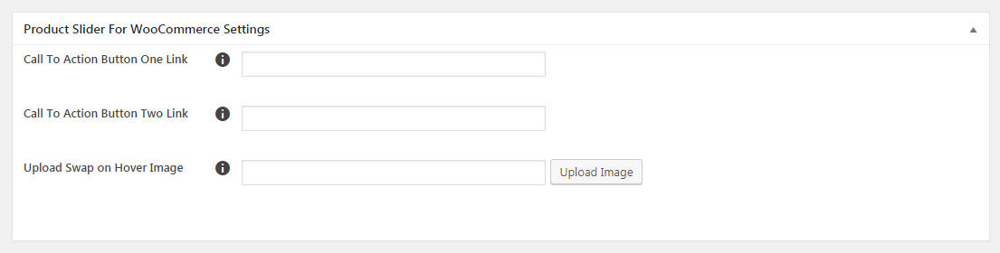The Product Slider For WooCommerce Settings is used for individual product settings for button link and gallery.It has following settings:
- Call To Action Button One Link: This is used to show the individual custom link for call to action button one
- Call To Action Button Two Link: This is used to show the individual custom link for call to action button two
- Upload Swap on Hover Image: This is used to show the swap image for Swap On Hover animation type.
Shortcode Usage
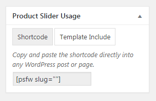In Product Slider For WooCommerce Usage metabox you can get the shortcode for page and theme which you can copy & paste the shortcode directly into any WordPress post or page or theme.
This documentation tries to cover as much details about plugin to ease your plugin experience.
AccessPress Themes